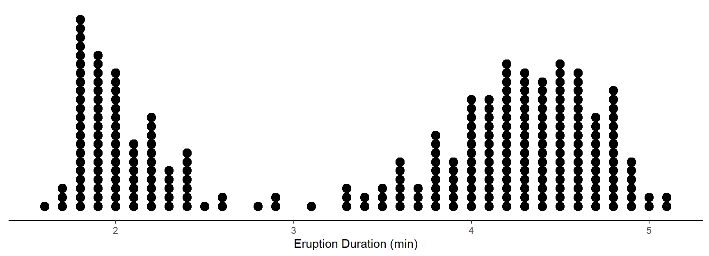

You can also download a PDF copy of this lecture.
| Parameter | Point Estimate | Standard Error | Margin of Error | Confidence Interval | Design |
|---|---|---|---|---|---|
| \(p\) | \(\hat{p}\) | \(\sqrt{\frac{\hat{p}(1-\hat{p})}{n}}\) | \(z\sqrt{\frac{\hat{p}(1-\hat{p})}{n}}\) | \(\hat{p} \pm z\sqrt{\frac{\hat{p}(1-\hat{p})}{n}}\) | A |
| \(\mu\) | \(\bar{x}\) | \(\frac{s}{\sqrt{n}}\) | \(t\frac{s}{\sqrt{n}}\) | \(\bar{x} \pm t\frac{s}{\sqrt{n}}\) | A |
| \(\mu\) | \(\bar{x}\) | \(\frac{s}{\sqrt{n}}\sqrt{1-\frac{n}{N}}\) | \(t\frac{s}{\sqrt{n}}\sqrt{1-\frac{n}{N}}\) | \(\bar{x} \pm t\frac{s}{\sqrt{n}}\sqrt{1-\frac{n}{N}}\) | B |
| \(\tau\) | \(N\bar{x}\) | \(N\frac{s}{\sqrt{n}}\sqrt{1-\frac{n}{N}}\) | \(tN\frac{s}{\sqrt{n}}\sqrt{1-\frac{n}{N}}\) | \(N\bar{x} \pm tN\frac{s}{\sqrt{n}}\sqrt{1-\frac{n}{N}}\) | B |
Design A: Sampling with replacement, an infinite number of observational units, or \(N\) is much larger than \(n\).
Design B: Sampling without replacement.
We are making certain assumptions about the sampling distribution of a point estimate when using the equations above. We assume that the statistic is unbiased, that we can compute (approximately) the correct standard error, and that the shape of the sampling distribution is approximately normal.
A statistic is unbiased if its mean equals the parameter being estimated, otherwise the statistic is said to be biased.
Sources of bias:
Sampling bias: Failure to account for the fact that some units are more or less likely to be included in the sample.
Non-response bias: Failure to observe some observational units that were intended to be observed.
Response bias: Errors in observation/measurement of the variable of interest.
In surveys, sampling bias can be eliminated through the use of a random sampling design (aka “probability sampling” or “scientific sampling”). One example is what is known as a simple random sampling design where every possible sample of \(n\) units is equally likely. Our formulas assume that the survey sampling design is simple random sampling.
Recall that the standard deviation of a statistic is also called the standard error, which is used to compute the margin of error, the confidence interval, and test statistics (which we will discuss after the third examination).
The design can affect the standard error (e.g., sampling with versus without replacement).
To have a sampling distribution that is (approximately) normal in shape, we need at least one of the following two conditions:
The population distribution is (approximately) normal in shape.
The sample size (\(n\)) is sufficiently large.
The population distribution is never normal in shape. Why?
The sampling distribution is “sufficiently large” if both \(n\hat{p} \ge 15\) and \(n(1-\hat{p}) \ge 15\). We can explore why this is necessary.
Example: A researcher obtains 100 seeds from a distributor. She plants those seeds and finds that 70 out of the 100 seeds germinate. She wants to estimate the probability that a seed obtained form this distributor will germinate using a confidence interval. Is the sample size large enough? What if she obtained 10 seeds and observed that 7 out of 10 germinated?
The population distribution might be approximately normal in shape.
The sampling distribution will be approximately normal if \(n\) is large enough.
Example: Here is a sample of \(n\) = 272 observations of the eruption duration of Old Faithful. Would we conclude that the population distribution is approximately normal? Would we conclude that the sampling distribution is approximately normal? Why or why not? 